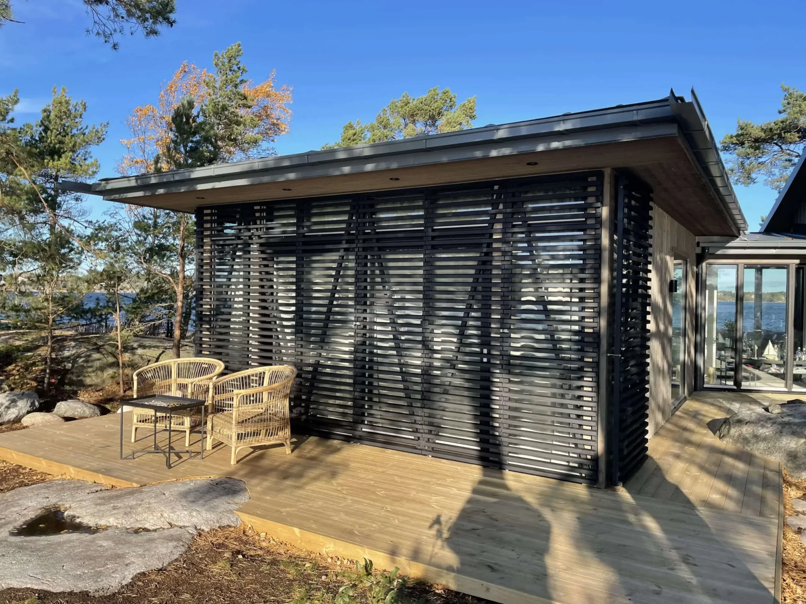
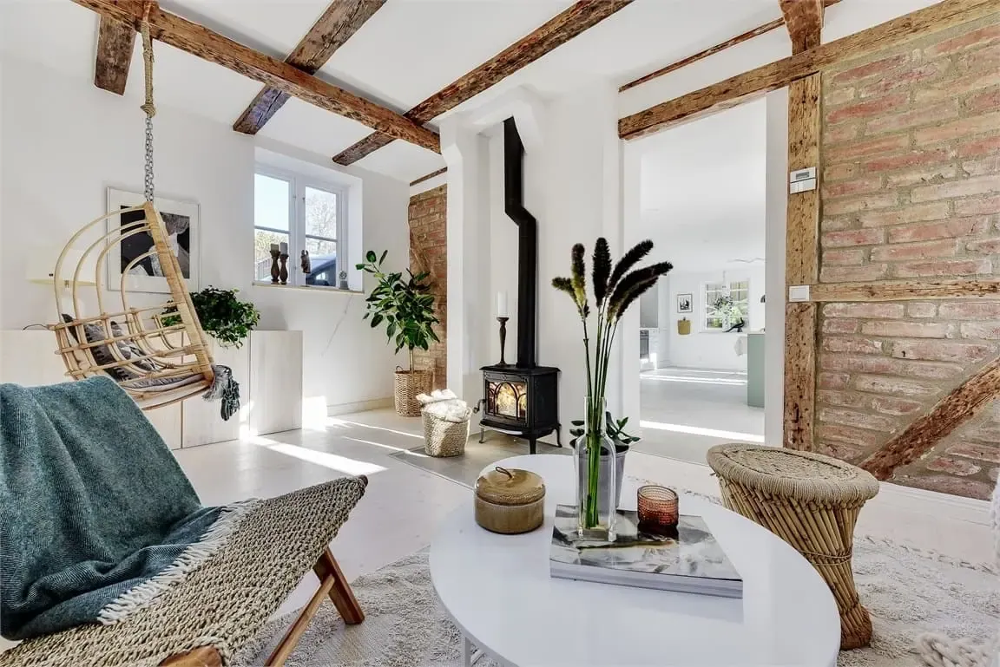

Din vision.
Vårt hantverk.
Nybyggnation, varsam renovering och snickeri.
För hem med höga krav. I Stockholm och skärgården.
Byggt med omtanke.
Ända in i detaljerna.
Det är skillnad på att bygga ett hus och att förstå ett hem. Vi förenar gediget hantverk med arkitektonisk känsla – från varsamt renoverade våningar till nya hus i skärgården.
Som Hammerbygg tar vi samma omsorg om samarbetet som om slutresultatet. Med rätt kompetens, tydlig projektledning och respekt för ditt privatliv.
Lär känna HammerbyggArbeten som
talar för sig själva.
Utforska våra projekt
Se bilderRenovering & snickeri
Renovering · platsbyggtFrån första skiss
till sista detalj.
Vi bygger nytt, bevarar det värdefulla och skapar nya möjligheter i det som redan finns.
Nybyggnation & ombyggnad
Från den första idén till ett hem som är helt ditt.
Lägenhetsrenovering
Nya funktioner. Samma respekt för husets karaktär.
Kulturhistorisk renovering
Bevara historien. Bygg varsamt för framtiden.
Landskap & utemiljö
Låt platsen utanför bli en del av hemmet.
Bygga i skärgården
Samma omsorg, även bortom landsvägen.
Byggservice & snickeri
De mindre arbetena förtjänar samma omtanke.
Vill du samla ansvaret?
Vi erbjuder total- och generalentreprenad.

Även där
vägen tar slut.
En ö ställer andra krav. Vi kan skärgårdens förutsättningar – från materialtransporter och logistik till hantverket på plats.
Med utgångspunkt från Djurö arbetar vi hela vägen ut i Stockholms kustband.
Bygga i skärgårdenFörtroende börjar
med insyn.
Se vad kunderna tycker och lär känna hur vi arbetar innan du bestämmer dig.
Läs omdömen på Google4,0/ 5
Google-betyg för Tyresö Bygg & Partners
Vårt tidigare namn. Kontrollerat 22 oktober 2026.Betyget är en ögonblicksbild, inte ett liveflöde.
En tydlig väg
från idé till verklighet.
Så fungerar samarbetet- 01
Vi börjar med din idé
Berätta om platsen, dina önskemål och vad du vill uppnå. Vi pratar igenom förutsättningarna.
- 02
Vi planerar tillsammans
Omfattning, material, ekonomi och tid samlas i ett upplägg som passar ditt projekt.
- 03
Vi håller ihop bygget
Rätt hantverkare, löpande uppföljning och dokumentation – hela vägen till överlämningen.

Hantverk är personligt.
Det är vi också.
Bakom Hammerbygg står Dennis Lennhammer och ett nätverk av yrkeskunniga hantverkare och specialister. Vi tycker om krävande projekt, genomtänkta material och nära samarbeten.
För dig betyder det en engagerad partner som vill förstå din vision, inte bara din ritning.
Dennis LennhammerVd & ägare
Människorna bakom HammerbyggVar arbetar ni?
Vi arbetar i Stockholm med omnejd och i Stockholms skärgård. För skärgårdsarbeten utgår vi från Djurö och planerar transporter och logistik efter projektets läge.
Kan ni ta hand om hela byggprojektet?
Ja, vi erbjuder både totalentreprenad och generalentreprenad. Vilken form som passar beror bland annat på om du redan har arkitekt, konsulter och färdiga handlingar.
Utför ni även mindre arbeten?
Ja. Byggservice omfattar bland annat underhåll, fönster och dörrar, reparationer och platsbyggda snickerier. Beskriv ditt behov så diskuterar vi upplägget.
När kan ni börja?
Startdatum beror på projektets omfattning, längd och vilka resurser som behövs. Ring eller mejla med en kort beskrivning och önskad tidsplan så ser vi över möjligheterna.
Vad vill du
bygga vidare på?
Ett nytt hem, en varsam renovering eller en idé som behöver hitta sin form. Börja med ett samtal med Dennis.
Berätta om ditt projekt 070 898 42 12Ritningar klara eller bara en första tanke?
Du är välkommen i båda fallen.
Du är välkommen i båda fallen.